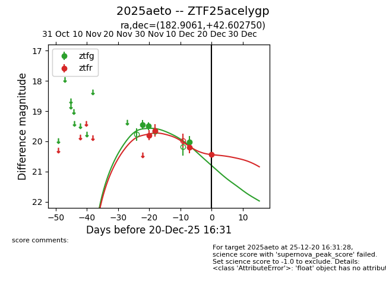
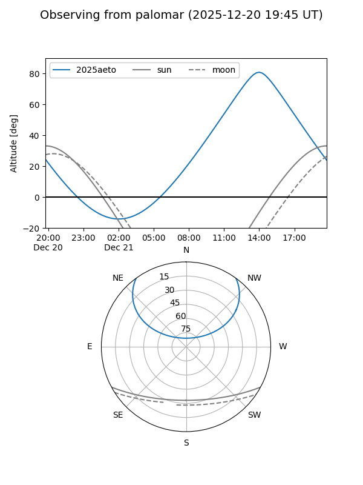
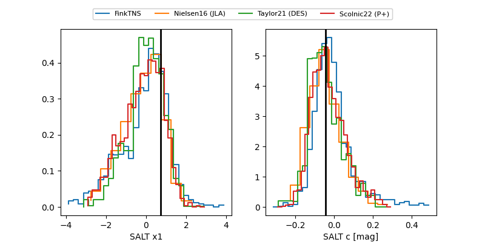

2025aeto
Target 2025aeto at 2025-12-22 16:36
Aliases and brokers:
FINK: fink-portal.org/ZTF25acelygp
Lasair: lasair-ztf.lsst.ac.uk/objects/ZTF25acelygp
ALeRCE: alerce.online/object/ZTF25acelygp
TNS: wis-tns.org/object/2025aeto
YSE: ziggy.ucolick.org/yse/transient_detail/2025aeto
alt names
ZTF25acelygp (ztf,fink_ztf)
2025aeto (tns,yse)
Coordinates:
equatorial (ra, dec) = 182.9061,+42.60275
equatorial (HMS+DMS) = 12:11:37.47,+42:36:09.90
galactic (l, b) = (148.0107,+72.53289)
Flags:
Photometry:
last ztfg=20.02, ztfr=20.43
4 ztfg, 4 ztfr detections
Lightcurve

Visibility


Additional plots
